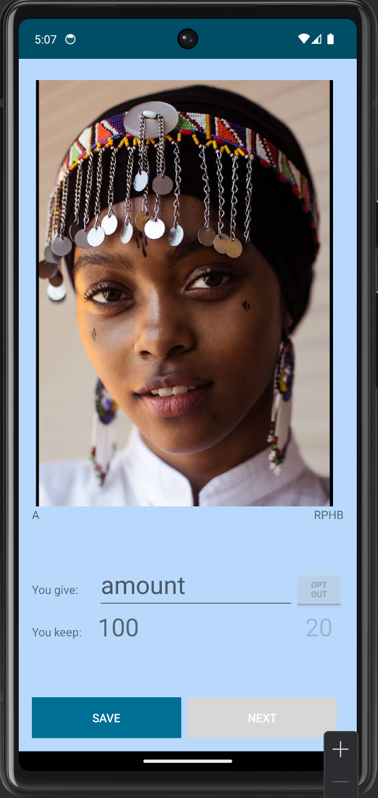
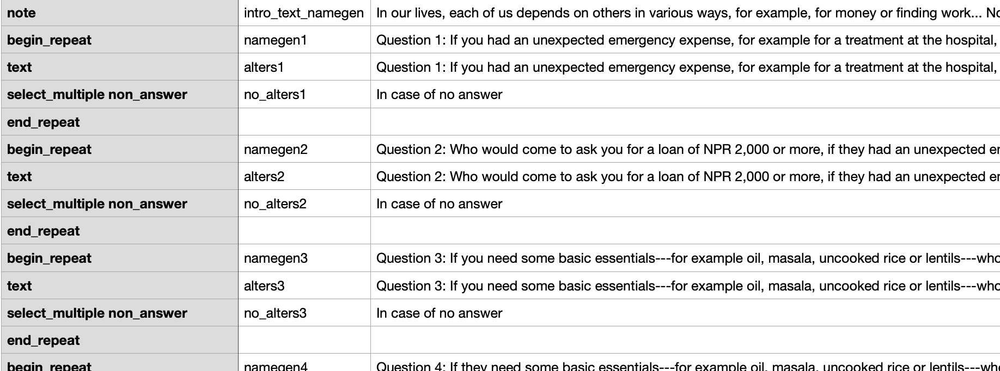

New Tools for Fieldwork
Preview of the research tools we’re developing.
One aspect of the Rep²SI project that has been particularly rewarding, if also at times confounding, is our development of new tools for our fieldwork. Just as we’ve built on the work of others, we’re hopeful others will use and build on what we’ve put together. We’ll have some later posts that go into more detail on each of these, but here is a preview!
DieTryin
A major jumping off point for the overall project has been DieTryin [1], developed by Cody Ross, inspired by Matt Gervais’s “RICH” games [2]. These are economic games that use “recipient identity-conditioned heuristics” (hence “RICH”). Meaning, participants make decisions about a range of partners, presented to them via photos. Cody has put together some great resources for gathering RICH data across a number of possible mediums. We’ve run with the Android app that he originally developed, customizing it extensively for our own purposes.
For us, that means things like presenting participants with photos of partners with whom they play the Dictator Game:

Tools for Social Network Data Collection
Another element of our work has been gathering social network data (as part of the larger ENDOW Project). We’ve developed some tools to make that as streamlined a process as possible for us and for the respondents.
Here Comes The Fuzz
A crucial but difficult task when gathering social network data is correctly identifying the people whom a respondent names. To help with that, we developed Here Comes The Fuzz, a customisable tool for creating a searchable database with fuzzy search. Fuzzy search is helpful when there are different ways to spell names (Laxmi versus Lakshmi) or different name variants (Bill versus William), which would be missed with a standard search. The tool let’s the user customize which fields appear and how they’re searched, so that we can quickly hone in on the right person. There’s the option to include photos, so the participant can easily confirm if the right person has been found.
Here’s a demo of how it works: 
You can try it out for yourself here.
GenNGen
We’ve been gathering social network data Kobo, a popular tool for conducting field surveys with tablets. With it, we were able to start plotting networks within hours of finishing data collection, which is just mindblowing, if you’re used to many tedious days of data entry! Creating the underlying XLS Forms for use with Kobo, though, can be a bit unwieldly. So, in a way akin to XLSFormulator [3], we’ve developed GenNGen. With this, you start with a basic template and use our code to expand it to generate all of the name generators you need (hence GenNGen) in the necessary XLS format:

More to come on all of these tools down the line! Please look to the GitHub repos, clone, flag issues, make pull requests, etc! We hope these are useful!